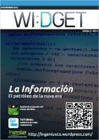

Esta página contiene enlaces a los números publicados de la revista WI:DGET en 2014 - 2012 - 2011.
Página web: Revista WI:DGET (copia en archive.org)
Número 4 - 2014 mayo
Descarga (PDF 24.1 MB, español)

Número 3 - 2012 noviembre
Descarga (PDF 13.6 MB, español)
Número 2 - 2011 noviembre
Descarga (PDF 13.5 MB, español)
Número 1 - 2011 mayo
Descarga (PDF 13.1 MB, español)